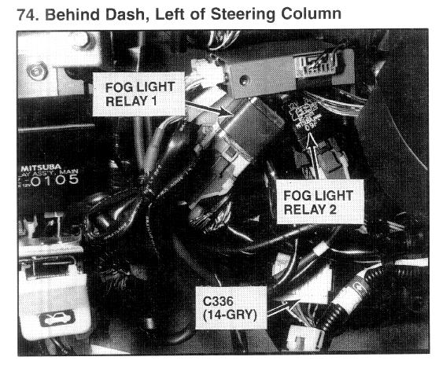

Operation CHARM
: Car repair manuals for everyone.
Home
>>
Acura
>>
1994
>>
Legend Sedan V6-3206cc 3.2L SOHC FI
>>
Repair and Diagnosis
>>
Lighting and Horns
>>
Fog/Driving Lamp
>>
Fog/Driving Lamp Relay
>>
Locations
Fog/Driving Lamp Relay: Locations

Behind Dash, Left of Steering Column